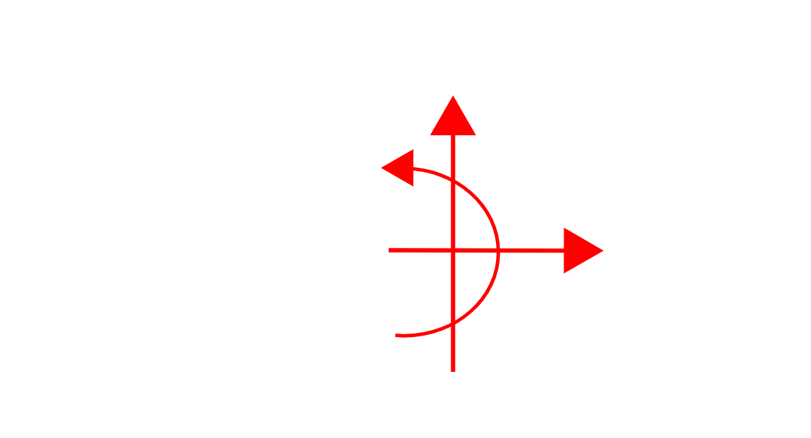
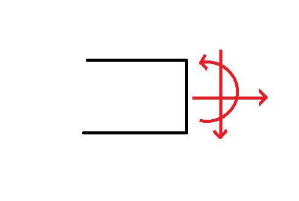
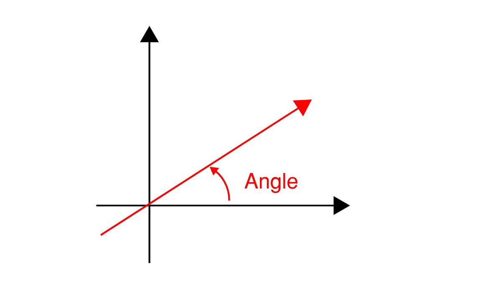

Theory¶
A brief overview of the engineering theory and conventions used in this program are illustrated below.
Sign Convention¶
For External Forces the following convention is used:

For x direction: To the right is positive
For y direction: A force up is positive
For Moments: A moment anti-clockwise is positive
{kind=link}
For internal forces considering the left of a cut:

For Axial force (x direction): To the right is positive
For shear force (y direction): Down is positive
For Moment: clockwise is positive
{kind=link}
For deflections:
Up is considered positive
For angled point loads (assuming a postive force is used):

An angle of 0 indicates a positive force to the right
An angle between 0 and 90 indicates a positive force to the right and a positive force up
An angle of 90 indicates a positive force up
An angle between 90 and 180 degrees indicates a force acting left (negative direction) and a positive force acting up
An angle of 180 indicates a negative horizontal force
{kind=link}
Calculation Theory¶
The calculation is based upon the slope deflection method for beams for unknown moments and forces in the y direction. For unknowns in the x direction compatability equations are used.
The theory can be read up on in chapter 10.3 of this textbook extract
In short, it can be said in algebra that to be able to solve for n number of unknowns we will also need n number of equations (assuming all equations are independent).
We know that from simple statics to solve a determinate beam we have three equations, that the sum of external forces in all the indepent directions will equal 0.
Since our moment equations will never help us to resolve axial forces on our 1D beam, let us consider two indepent systems of indeterminancy:
Forces in the x direction
Forces in the y and m direction
If we have more than one unknown in the x direction, or more than two unknowns in the y and m directions collectively, then equilibrium will not be enough to solve for the forces on the beam.
Forces in the x-direction¶
For a single x restraint we can resolve our unknown force by equilibrium. When we introduce a second restraint we can use our knowledge that both of these restraints will be fixed in space, and hence the axial deformation between them will amount to 0.
For forces in the x-direction we can get our axial displacement from:
e = (N * L) /( E * A ) OR
e = ∫ N(x) / (E(x) * A(x)) dx
Assuming E*A is constant we can simply integrate our normal force diagram between supports and the result will be 0. Hence for each additional support in the x direction we can have a new equation, and we can solve for all our unknowns in the x-direction.
Forces in the y-direction and m-direction¶
For supports totalling a maximum total of two unknowns in the y-direction and m-direction we can solve for our forces with equilibrium. When we introduce an additional unknown we can use the following geometrical information to help establish additional equations:
For additional supports in the y-direction we know that the vertical displacement will be 0.
For additional supports in the m-direction we know that the slope of the beam will be 0.
We can get slope and vertical displacement equations by integrating the moment equation with respect to x.
EIv’’ = M
EIv’ = ∫ M dx + C1
EIv = ∫∫ M dx dx + C1*x + C2
This introduces two new unknowns, C1 and C2, which are the constants for integration. Luckily, we still have our two equilibrium equations so we can solve for the integration constants.
In order to establish the internal moment equation (M) as a single equation piecewise functions are helpful.